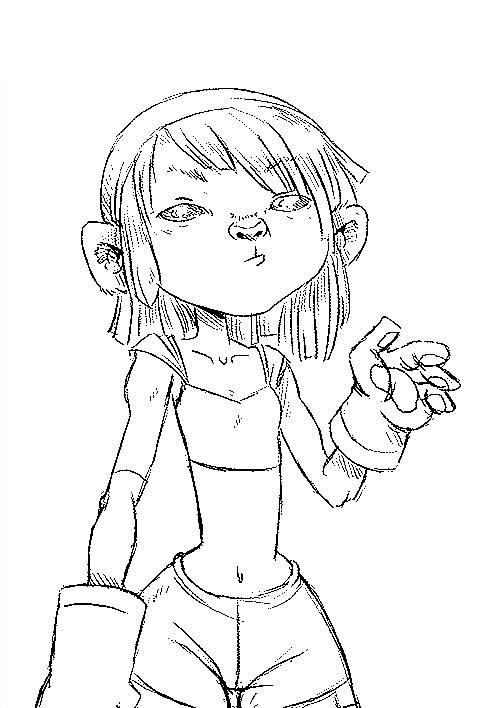
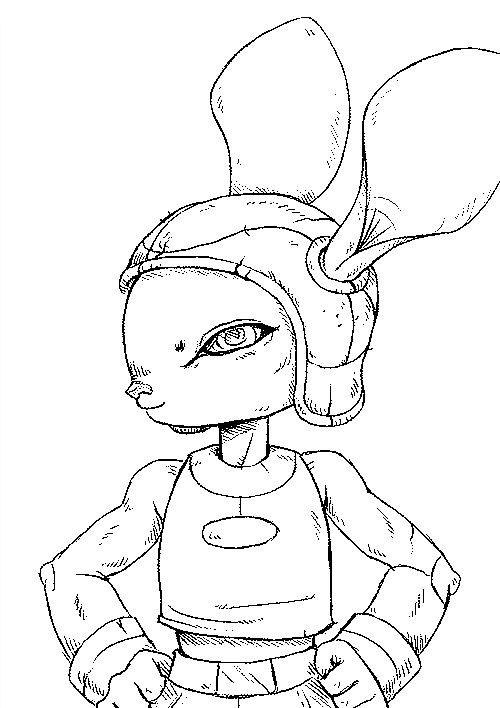
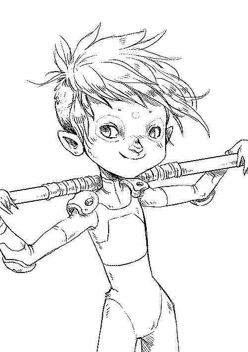
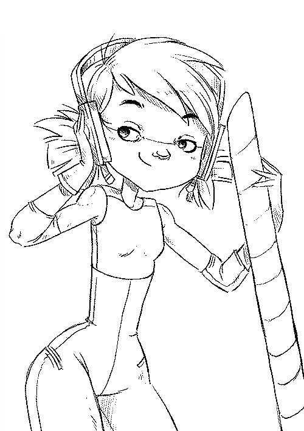
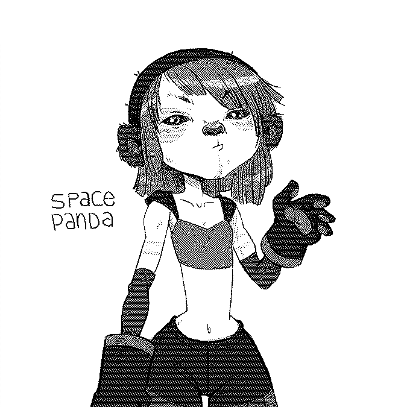
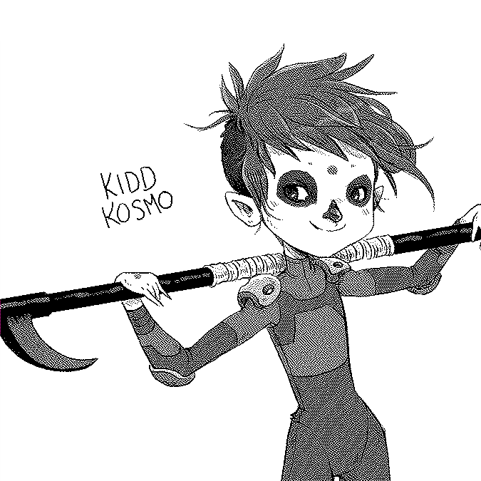
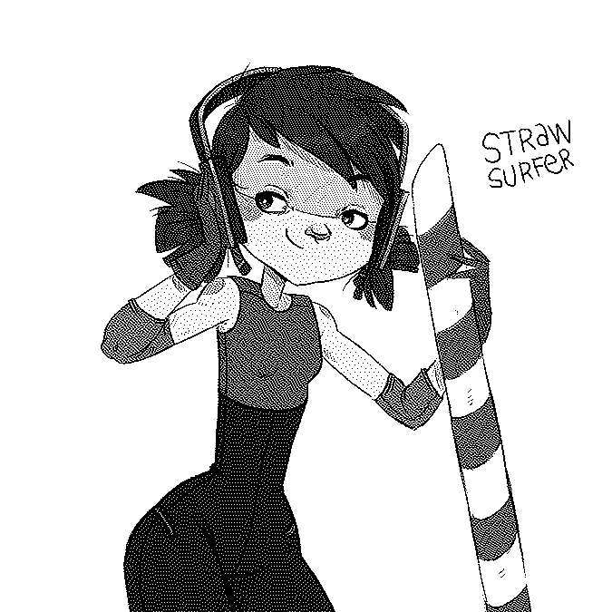
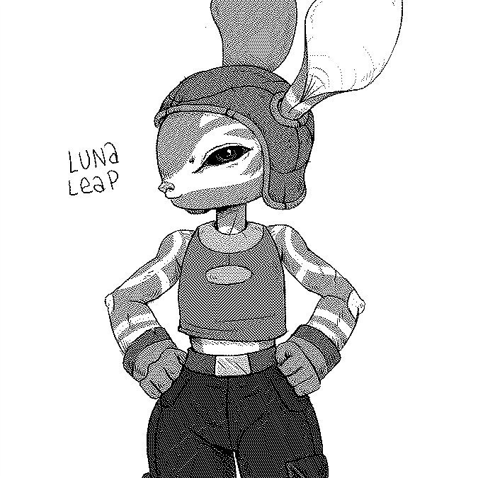
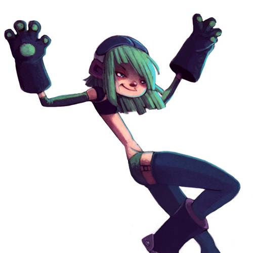

About
About Projects
Projects Games
Games Stories
Stories Store
Store Hobby
Hobby Notes
Notes How-to
How-toA story about a league of misfits called "Medussa's four", who race through the Austral system using non-regulated means of propulsion.
I've only written and done a few drawings for this story. As it stands, it is a mere sketch of a world. I might pick it up again in the future!
Encela, grandparent of Luna Leap, is banned from the "Belt Championship" by the IFS (interplanetary federation of ships) for breaking rules relating to race technique and style. The IFS has been poisoned by greed, their monopoly of transport and racing that spans many systems, Encela feels, is downright disgusting.
In reaction to this, Luna - who has prodigious skill with the taming, and riding of wild cyclomedussas - forms xem own league dedicated not to form and rules, but to the simple test of superior speed. The group also advocates for the 'right to build and use one's own transport', a thing the IFS has made illegal. This league of misfits, referred to as The Medussa's Four, includes Luna Leap, Space Panda, Straw Surfer and Kidd Kosmo.
In these races, the participants race through the Austral system - which consists of a multitude of tiny planets and moons - and use the relative movement and gravity of the planets or other astronomical object to increase their speed.
Their movement aims to dismantle the unfair regulations that has been strangling the habitants of the Australs for many cycles now.
HISTORY
The Lepori, Denurith and Ursada all stem from the Homini, from ships that left their homeplanet Retna to explore the grandioseness that is their universe (The Australs). They lived aboard their ships for thousands of years, keeping some contact, while evolving as separate species. Many years later, they resolved to live near one another again, with the stars growing dark togetherness and harmony has never been so important. They steered their ships back over to Retna, the only planet capable of sustaining life, now a center of exchange of goods and knowledge and the place where all 4 races can go to live as equals.
2 now orbit the planet in their ships, all, but the Ursada's ship "The Arkto" that was decommissioned due to various technical problems. Now, the Ursada live on Retna's soil.
Medussa was the name of the station orbitting Retna, the base model for the 3 generational travel ships that departed long ago, the 3 being The Santoshi Mata, Arkto and the Leveret.
CHARACTER PROFILES
SPACE PANDA

Padna is an Ursada. After Arkto was decommissioned, the Ursada emigrated on Retna.- Name: Padna
- Racing name: Space panda
- Family: Ursada
- Gender: Cis female
- Appearance: Pale skin, fuzzy ears.
- Propulsion: Solar disc
Padna is a maverick, and doesn't need others to be happy, she likes parkour, to create her own paths in the world, and this is what led her to race through the Australs. Her family never had the money to board a ship to travel offplanet, and so Padna found her own way.
Her time in hackspaces on Retna, earned her the skills to build her solar disc. The disc retracts into a baton for easy carrying, and fans out into a translucent circle, with solar cells embedded in the material. One end of the baton is equipped with a thruster, enabling her to get some momentum, so she can reach the gravity of a near astronomical object to propel herself onward.
LUNA LEAP

No one else can tame and train cyclomedussas, these rare soft-bodied creatures of speed. ChaCha is friend to Lun-di, they're perfectly attuned to each other's thoughts and feelings. ChaCha's underside has tentacles that twist and turn with incredible speed, pushing the air to propel itself forward.- Name: Lun-di
- Racing name: Luna Leap
- Family: Lepori
- Gender: Aporagender, uses xe/xem/xyrs pronouns
- Appearance: Long ears, green-ish skin with light patterns, strong build, dark eyes.
- Propulsion: Cyclomedussa named ChaCha
As a young Lepori, Lun-di developed an interest for racing because of Encela, grandparent and racer extraordinaire. Xe developed a great dislike for the IFS (interplanetary federation of ships), because of their affluence and rigidity. After Encela was forcibly removed from the Belt Championship for using a non-authorized style of ship, Lun-di set out to form xem own league, a group of racers dedicated not to form or rules, but to speed and accessibility.
KIDD KOSMO

Keeda is a Denurith, living on Bahrit, one of Retna's moons.- Name: Keeda Visarayu
- Racing name: Kidd Kosmo
- Family: Denurith
- Gender: Agender, uses ze/hir/hirs pronouns
- Appearance: Bluish skin and hair, dark rim around eyes, dark nose, circle markings on hands and forehead. Skinny build.
- Propulsion: Thruster shoes
The Denurith practice ascetism, they dedicate ther life to serving all other living beings, they believe in simplicity and regard gender, extravagance and religion as obstacles to mental clarity. Denurith are given a set of thruster shoes on leave, which they use to travel through space. Keeda sets off to Retna, in search of a cause.
The people of Retna struggle with money, it is a junk planet filled with refuse and old parts. Most habitants have never left the planet and use recycled objects to create something new to sell to off-planet visitors at the grand bazaar. Keeda hopes to help these people, to try and find ways for them to need 'less', to lessen their dependence on the economy and in turn their need for money.
Keeda is skilled, ze doesn't race for glory, but to disrupt and to inspire in hopes of opening interplanetary travel to everyone. Together with space panda, ze likes to teach younglings to build, and repair their own transport at the hackspaces on Retna.
STRAW SURFER

Klo is a Homini, born on the Retna, now under the jurisdiction of the IFS "the interplanetary federation of Ships" (who have a monopoly on transportation).- Name: Klo Starawin
- Racing name: Straw Surfer
- Family: Homini
- Gender: Cis female
- Appearance: Bluish skin and hair, dark rim around eyes, dark nose, circle markings on hands and forehead. Skinny build.
- Propulsion: A long hollow cyclinder that elongates at will.
Her family is well-off, permitting her to have a ship of her own. She has taken part in the Belt Championships many times, but aches for the freedom and creativity to design her own transport. Her sibling Lef is an Enforcer in the IFS, they have little contact, in fact, she cares little to know what he's up to given the dark nature of his work.
She heard of Encela's ban from racing, curious, Klo makes a trip to The Leveret to learn more about cyclomedussas. Klo is privileged, in the sense that she can go wherever she likes, and uses this to help others who are less fortunate than herself. She is a jovial being, high-energy and always looking for something to do. Klo used to be oblivious to a lot of the bad happenings on Retna, now she does all she can to right this and inform herself.
Unable to tame a cyclomedussa, lacking the patience mostly, Klo tries and find her own DIY transport. Back on Retna, she finds a like-minded invidiual who helps her to build the tech for a cylinder that elongates in perpetuity, or "infinite straw" that she now uses to travel through space.
ART




